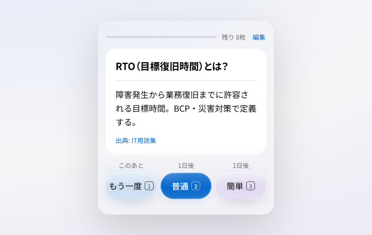
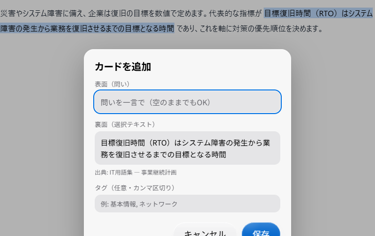
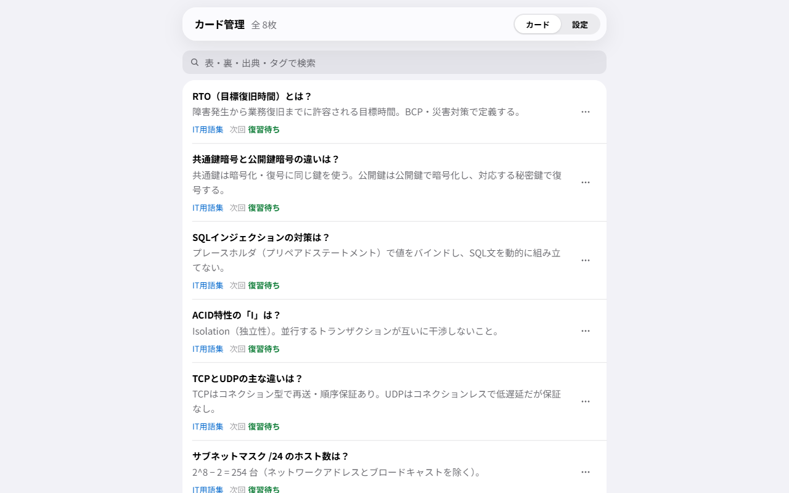
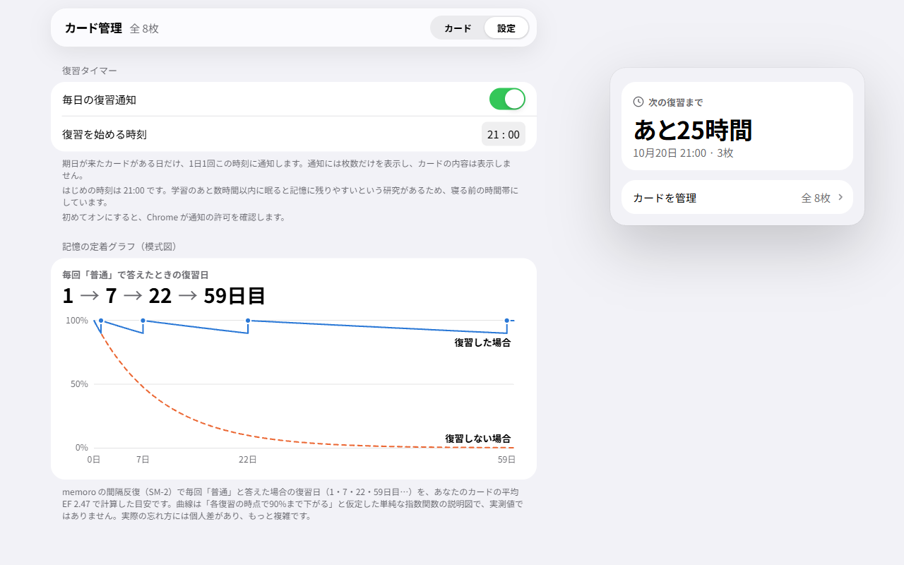

memoro
Webtexte als Lernkarten. SM-2 zeigt nur, was heute fällig ist. Zum Vokabellernen. Lokal gespeichert, ohne Anmeldung.

In 3 Schritten starten
memoro ist eine Chrome-Erweiterung, mit der Sie Text auf einer Webseite markieren, im Kontextmenü „Karte zu memoro hinzufügen“ wählen und den Text im Dialog als Lernkarte speichern. Nehmen Sie sich danach täglich ein paar Minuten für die heute fälligen Karten, deren Anzahl am Symbol in der Symbolleiste erscheint.
Markieren Sie den Text, den Sie behalten möchten, und wählen Sie per Rechtsklick „Karte zu memoro hinzufügen“.
Geben Sie im Dialog eine kurze Frage ein und speichern Sie. Das Feld darf leer bleiben; dann wird der markierte Text zur Vorderseite.
Klicken Sie auf das Symbol mit der Anzahl der heute fälligen Karten in der Symbolleiste und bewerten Sie sich mit „Nochmal / Gut / Einfach“.

Die wichtigsten Funktionen
Verteilte Wiederholung (SM-2) zeigt nur die fälligen Karten. Geeignet für Wissen, das Sie über das erste Lesen hinaus behalten möchten: Begriffe für Zertifikatsprüfungen, englische Vokabeln oder Fachwissen für den Beruf.

Wiederholungstimer und Vergessenskurve
Mit der Zeit vergessen wir nach und nach, was wir gelernt haben. Der Psychologe Hermann Ebbinghaus hat diese „Vergessenskurve“ 1885 an sich selbst gemessen. Eine Replikationsstudie von 2015 berichtete über Ergebnisse, die seinen ursprünglichen Daten nahekommen. memoro legt den nächsten Termin für jede Karte durch verteilte Wiederholung (SM-2) fest, bei der sich die Abstände nach jeder Wiederholung vergrößern. Der Wiederholungstimer zeigt Ihnen, wann es so weit ist.

Das Pop-up zeigt die Zeit bis zur nächsten Wiederholung, das Datum und die Kartenanzahl. Unter „Karten verwalten“ sehen Sie auch den nächsten Termin jeder Karte.
Zur gewählten Uhrzeit (voreingestellt: 21:00 Uhr) erscheint nur an Tagen mit fälligen Karten eine Benachrichtigung. Sie zeigt nur die Anzahl, nie den Karteninhalt.
Eine schematische Darstellung aus den Durchschnittswerten Ihrer Karten zeigt, wie sich die Wiederholungsabstände vergrößern. Sie zeigt keine Messwerte, sondern veranschaulicht das Prinzip der verteilten Wiederholung.
Wenn Sie eine Lernrunde abschließen und sich an mindestens eine Karte erinnert haben, zeigt die Abschlussansicht die Anzahl der Karten, an die Sie sich heute erinnert haben. Für Karten, an die Sie sich heute und beim letzten Mal erinnert haben, zeigt sie außerdem die mittlere Anzahl der Tage seit der letzten Ansicht und die Verlängerung des Abstands bis zur nächsten Wiederholung (zum Beispiel von durchschnittlich 4 auf 11 Tage). Zwei Vergessenskurven in einem Diagramm vergleichen den Verlauf mit und ohne heutige Wiederholung. Die Kurven sind schematisch und messen nicht Ihr Gedächtnis.
Wenn Ihnen die Antwort nicht einfällt, wählen Sie „Hinweis“. Die Antwort wird vom Anfang her schrittweise aufgedeckt (auf Japanisch jeweils einige Zeichen, in Sprachen wie Englisch jeweils ein Wort; die vollständige Antwort wird nie aufgedeckt). Nach einem Hinweis wird „Einfach“ wie „Gut“ behandelt, damit sich der Abstand nicht zu stark vergrößert.
Eine Karte gilt als „gefestigt“, wenn Sie sich nach dem ersten erfolgreichen Erinnern an drei weiteren, verschiedenen Tagen dreimal in Folge daran erinnern. Die Anzahl erscheint in der Abschlussansicht und die Kennzeichnung in der Kartenliste. Als Orientierung dient ein Wiederlernverfahren aus der Gedächtnisforschung.
Die Erinnerung ist zunächst auf 21:00 Uhr eingestellt. Eine Studie deutet darauf hin, dass Schlaf innerhalb weniger Stunden nach dem Lernen das Behalten fördert. Deshalb haben wir eine Uhrzeit vor dem Schlafengehen gewählt (in den Einstellungen änderbar).
Preise
Erstellen Sie bis zu 50 Karten kostenlos. Wiederholung, Kartenverwaltung sowie Exportieren / Importieren bleiben in der Gratisversion unabhängig vom Kartenlimit uneingeschränkt nutzbar. Ein Einmalkauf schaltet die unbegrenzte Kartenerstellung frei. In Japan beträgt der Preis 600 JPY. In anderen Regionen erscheint er beim Kauf in Ihrer Landeswährung (oder in US-Dollar, falls Ihre Währung nicht angeboten wird).
Wiederholung, Kartenverwaltung sowie Exportieren / Importieren sind unabhängig vom Kartenlimit verfügbar. Keine Registrierung und kein Login nötig.
Kein Abonnement, nach dem Kauf keine weiteren Zahlungen. In anderen Regionen erscheint der Preis beim Kauf in Ihrer Landeswährung (oder in US-Dollar, falls Ihre Währung nicht angeboten wird).
Datenschutz
Ihre Karten und Ihr Lernfortschritt werden ausschließlich im Browser (chrome.storage.local) gespeichert und nicht an externe Server gesendet.
memoro kommuniziert nur beim Kauf oder Wiederherstellen der einmaligen Freischaltung mit ExtensionPay / Stripe zur Zahlungsabwicklung (einschließlich der erneuten Prüfung des Kaufstatus). Alle anderen Vorgänge, darunter Kartenerstellung, Wiederholung, Kartenverwaltung sowie Import und Export, erfolgen ohne Netzwerkkommunikation.
Keine Registrierung und kein Login nötig (Zahlungsdaten werden nur beim Kauf benötigt).
Berechtigungen (auf das Nötigste beschränkt) Diese Berechtigungen benötigt memoro für die folgenden Zwecke. Die Erweiterung erfasst keinen Browserverlauf und greift nicht dauerhaft auf alle Websites zu.
| storage | Karten und Einstellungen (einschließlich Kaufstatus) im Browser speichern. |
|---|---|
| contextMenus | „Karte zu memoro hinzufügen“ im Kontextmenü anzeigen. |
| activeTab / scripting | Den Speicherdialog nur dann im aktiven Tab anzeigen, wenn Sie den Menüeintrag wählen, die Tastenkombination drücken oder im Pop-up auf „Auswahl als Karte speichern“ klicken (kein dauerhafter Zugriff auf alle Websites). |
| alarms | Die Anzeige der heute fälligen Karten regelmäßig aktualisieren (höchstens einmal pro Stunde) und die Erinnerungszeit des Wiederholungstimers planen. |
| notifications (optional) | Nur wenn Sie die Erinnerung des Wiederholungstimers einschalten, zur gewählten Uhrzeit „Heute fällig: N“ anzeigen (Chrome fragt beim Einschalten nach Ihrer Erlaubnis; Benachrichtigungen enthalten nie Karteninhalte). |
Bitte beachten: Speichern Sie keine vertraulichen Informationen oder Geheimnisse wie Passwörter in Ihren Karten. Die Daten werden lokal und unverschlüsselt gespeichert.
Für wen ist memoro gedacht?